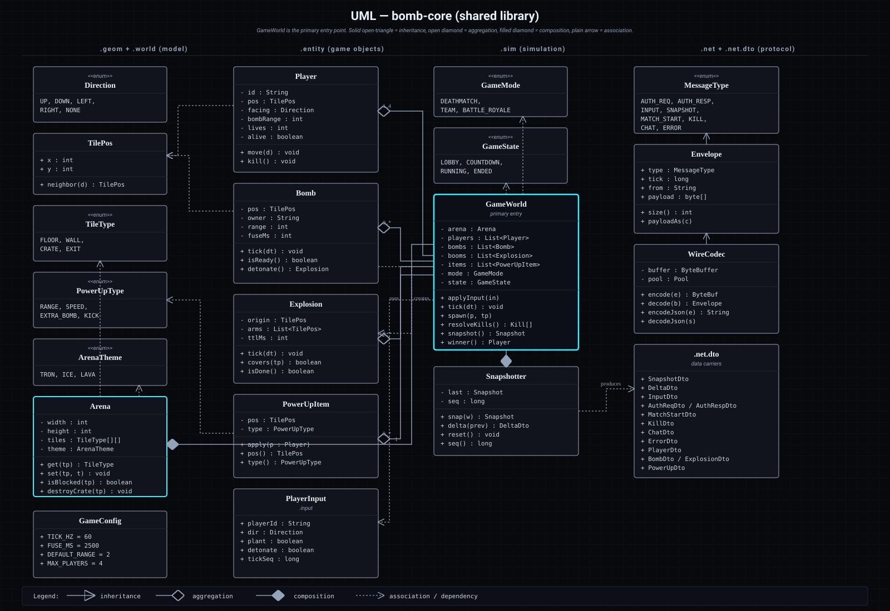
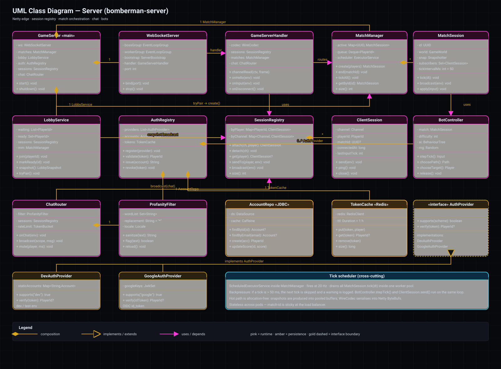
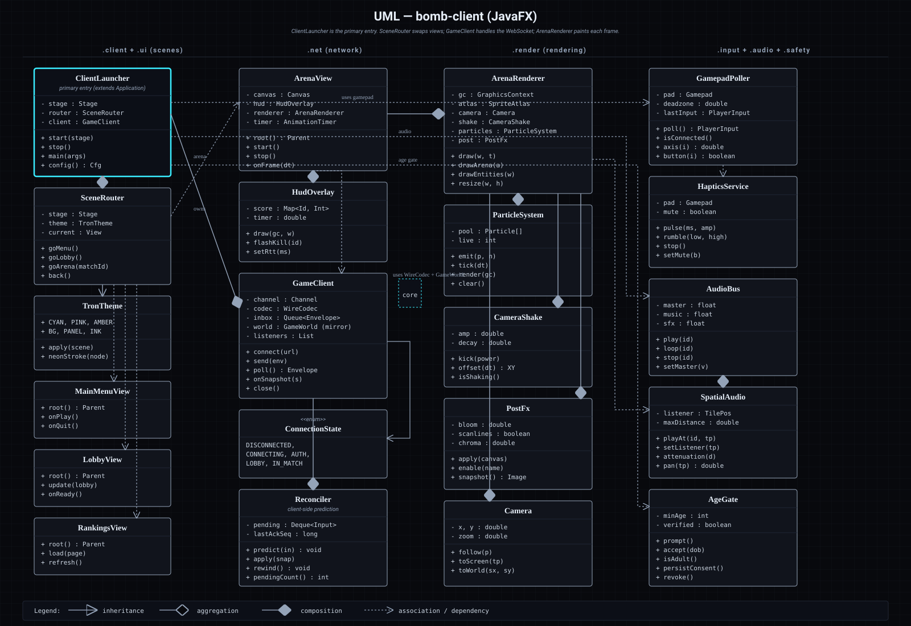
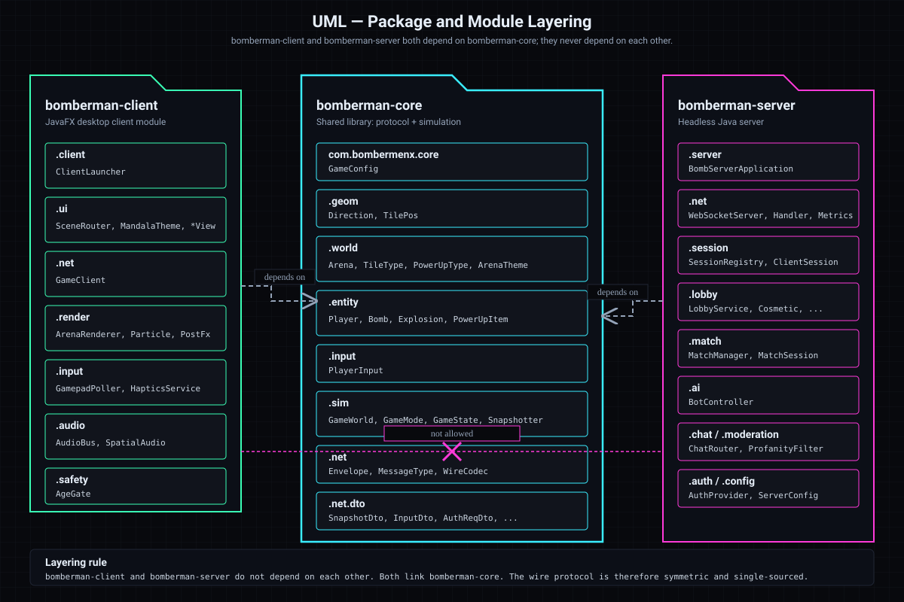

Layering rule
bomberman-core is the shared library — both bomberman-client and bomberman-server compile against it.
bomberman-client and bomberman-server never depend on each other. They only meet at runtime, across
the WebSocket wire, exchanging the JSON envelopes defined in com.bombermenx.core.net. Inside
core, the inner game model (geom, world, entity) has no knowledge of the outer wire layer (net, net.dto);
the Snapshotter is the bridge that turns simulation state into DTOs.
core
bomberman-core — Class Diagram
The simulation classes around GameWorld, the tile/arena model, the entity classes
(Player, Bomb, Explosion, PowerUpItem), and the wire
types (Envelope, MessageType, WireCodec). Filled diamonds mark
composition — GameWorld owns the lifecycle of its entities — while open arrows show plain
associations.

server
bomberman-server — Class Diagram
BombServerApplication is the composition root: it builds the WebSocketServer,
the SessionRegistry, the MatchManager, the AuthRegistry,
the LobbyService, and the moderation/chat stack. GameServerHandler is where
envelopes coming off Netty are routed to those services. The magenta triangle from
DevAuthProvider and GoogleAuthProvider indicates they implement the
AuthProvider interface.

client
bomberman-client — Class Diagram
The JavaFX side. ClientLauncher bootstraps the AgeGate and the
SceneRouter, which then swaps between MainMenuView, LobbyView,
RankingsView, and the in-game ArenaView + HudOverlay.
ArenaView drives the render pipeline (ArenaRenderer with
ParticleSystem, CameraShake, PostFx) and pulls input through
GamepadPoller, sending feedback via HapticsService. GameClient is the
single WebSocket adapter that every scene shares.

packages
Package Diagram
Three columns — one per Gradle module — with the dependency edges between them. Both runtime modules
depend on bomberman-core; the dashed line between client and server shows the explicit
non-dependency that the layering rule enforces. Inside bomberman-core the sub-packages are stacked from net
and net.dto at the top down through sim, entity, world, geom and input, with GameConfig at
the root.
